directory = 'data/house_price.csv'실습에 필요한 데이터 파일 다운로드
기본 import
import matplotlib.pyplot as plt
import pandas as pd
import numpy as np구글 코랩 (Colab) 한글 폰트 깨짐현상
- 구글 코랩 (Google Colab) 에서 한글 폰트 깨짐 현상이 발생합니다.
- 이는, 코랩에서 한글 폰트가 설치가 안되어 깨지는 현상이 발행하는 것입니다.
- 따라서, 한글 폰트를 설치 해주면, 깨짐 현상이 해결됩니다.
- 네이버가 제공하는 나눔 고딕 폰트를 설치하도록 하겠습니다.
df = pd.read_csv(directory)df.plot()/home/ubuntu/anaconda3/envs/tensorflow2_p36/lib/python3.6/site-packages/matplotlib/backends/backend_agg.py:211: RuntimeWarning: Glyph 50672 missing from current font.
font.set_text(s, 0.0, flags=flags)
/home/ubuntu/anaconda3/envs/tensorflow2_p36/lib/python3.6/site-packages/matplotlib/backends/backend_agg.py:211: RuntimeWarning: Glyph 46020 missing from current font.
font.set_text(s, 0.0, flags=flags)
/home/ubuntu/anaconda3/envs/tensorflow2_p36/lib/python3.6/site-packages/matplotlib/backends/backend_agg.py:211: RuntimeWarning: Glyph 50900 missing from current font.
font.set_text(s, 0.0, flags=flags)
/home/ubuntu/anaconda3/envs/tensorflow2_p36/lib/python3.6/site-packages/matplotlib/backends/backend_agg.py:211: RuntimeWarning: Glyph 48516 missing from current font.
font.set_text(s, 0.0, flags=flags)
/home/ubuntu/anaconda3/envs/tensorflow2_p36/lib/python3.6/site-packages/matplotlib/backends/backend_agg.py:211: RuntimeWarning: Glyph 50577 missing from current font.
font.set_text(s, 0.0, flags=flags)
/home/ubuntu/anaconda3/envs/tensorflow2_p36/lib/python3.6/site-packages/matplotlib/backends/backend_agg.py:211: RuntimeWarning: Glyph 44032 missing from current font.
font.set_text(s, 0.0, flags=flags)
/home/ubuntu/anaconda3/envs/tensorflow2_p36/lib/python3.6/site-packages/matplotlib/backends/backend_agg.py:180: RuntimeWarning: Glyph 50672 missing from current font.
font.set_text(s, 0, flags=flags)
/home/ubuntu/anaconda3/envs/tensorflow2_p36/lib/python3.6/site-packages/matplotlib/backends/backend_agg.py:180: RuntimeWarning: Glyph 46020 missing from current font.
font.set_text(s, 0, flags=flags)
/home/ubuntu/anaconda3/envs/tensorflow2_p36/lib/python3.6/site-packages/matplotlib/backends/backend_agg.py:176: RuntimeWarning: Glyph 50900 missing from current font.
font.load_char(ord(s), flags=flags)
/home/ubuntu/anaconda3/envs/tensorflow2_p36/lib/python3.6/site-packages/matplotlib/backends/backend_agg.py:180: RuntimeWarning: Glyph 48516 missing from current font.
font.set_text(s, 0, flags=flags)
/home/ubuntu/anaconda3/envs/tensorflow2_p36/lib/python3.6/site-packages/matplotlib/backends/backend_agg.py:180: RuntimeWarning: Glyph 50577 missing from current font.
font.set_text(s, 0, flags=flags)
/home/ubuntu/anaconda3/envs/tensorflow2_p36/lib/python3.6/site-packages/matplotlib/backends/backend_agg.py:180: RuntimeWarning: Glyph 44032 missing from current font.
font.set_text(s, 0, flags=flags)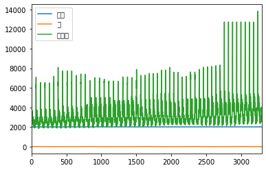
!sudo apt-get install -y fonts-nanum
!sudo fc-cache -fv
!rm ~/.cache/matplotlib -rfReading package lists... Done
Building dependency tree
Reading state information... Done
fonts-nanum is already the newest version (20140930-1).
The following packages were automatically installed and are no longer required:
linux-headers-4.4.0-31 linux-headers-4.4.0-31-generic
linux-image-4.4.0-31-generic linux-image-4.4.0-59-generic
linux-image-extra-4.4.0-31-generic linux-image-extra-4.4.0-59-generic
Use 'sudo apt autoremove' to remove them.
0 upgraded, 0 newly installed, 0 to remove and 158 not upgraded.
/usr/share/fonts: caching, new cache contents: 0 fonts, 1 dirs
/usr/share/fonts/truetype: caching, new cache contents: 0 fonts, 2 dirs
/usr/share/fonts/truetype/dejavu: caching, new cache contents: 21 fonts, 0 dirs
/usr/share/fonts/truetype/nanum: caching, new cache contents: 17 fonts, 0 dirs
/usr/local/share/fonts: caching, new cache contents: 0 fonts, 0 dirs
/home/ubuntu/.local/share/fonts: skipping, no such directory
/home/ubuntu/.fonts: skipping, no such directory
Re-scanning /usr/share/fonts: caching, new cache contents: 0 fonts, 1 dirs
Re-scanning /usr/share/fonts/truetype: caching, new cache contents: 0 fonts, 2 dirs
/var/cache/fontconfig: cleaning cache directory
/home/ubuntu/.cache/fontconfig: not cleaning non-existent cache directory
/home/ubuntu/.fontconfig: not cleaning non-existent cache directory
fc-cache: succeeded상단 메뉴 - 런타임 - 런타임 다시 시작 클릭
import matplotlib.pyplot as plt
import pandas as pd
import numpy as np
plt.rcParams["figure.figsize"] = (10, 7)
plt.rc('font', family='NanumBarunGothic') df = pd.read_csv(directory)
df.plot()
matplotlib.pyplot
matplotlib.pyplot의 기본적인 canvas 그리기와 스타일링 예제
본 튜토리얼은 matplotlib의 가장 기본적인 튜토리얼을 제공합니다.
다양한 옵션값과 스타일 기본 설정법을 배울 수 있습니다.
import matplotlib.pyplot as plt
import pandas as pd
import numpy as npplt.rc('font', family='NanumBarunGothic')
plt.rcParams["figure.figsize"] = (10, 7)1. 밑 그림 그리기
1-1. 단일 그래프
## data 생성
data = np.arange(1, 100)
## plot
plt.plot(data)
## 그래프를 보여주는 코드
plt.show()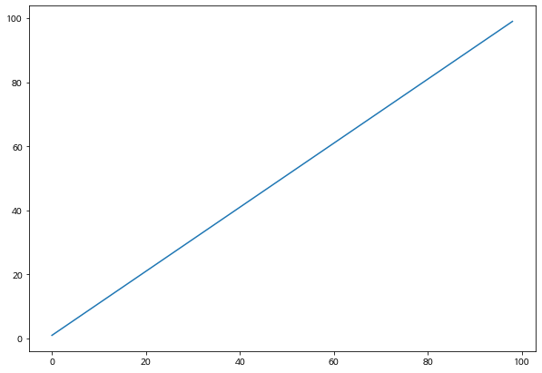
1-2. 다중 그래프 (multiple graphs)
1개의 canvas 안에 다중 그래프 그리기
data = np.arange(1, 51)
plt.plot(data)
data2 = np.arange(51, 101)
# plt.figure()
plt.plot(data2)
plt.show()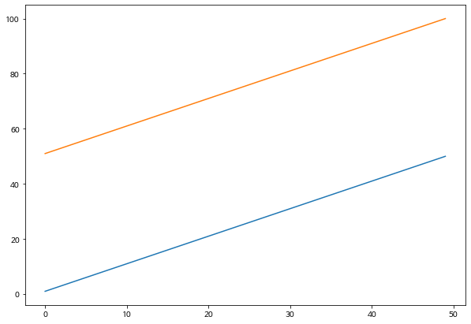
2개의 figure로 나누어서 다중 그래프 그리기 * figure()는 새로운 그래프 canvas를 생성합니다.
data = np.arange(100, 201)
plt.plot(data)
data2 = np.arange(200, 301)
# figure()는 새로운 그래프를 생성합니다.
plt.figure()
plt.plot(data2)
plt.show()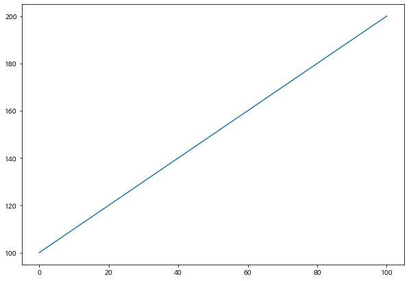
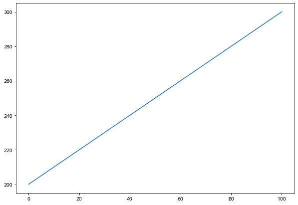
1-3. 여러개의 plot을 그리는 방법 (subplot)
subplot(row, column, index)
data = np.arange(100, 201)
plt.subplot(2, 1, 1)
plt.plot(data)
data2 = np.arange(200, 301)
plt.subplot(2, 1, 2)
plt.plot(data2)
plt.show()
위의 코드와 동일하나 , (콤마)를 제거한 상태
data = np.arange(100, 201)
# 콤마를 생략하고 row, column, index로 작성가능
# 211 -> row: 2, col: 1, index: 1
plt.subplot(211)
plt.plot(data)
data2 = np.arange(200, 301)
plt.subplot(212)
plt.plot(data2)
plt.show()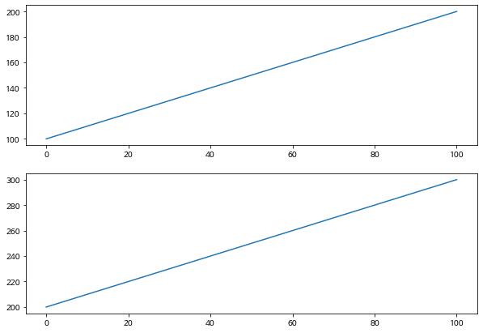
data = np.arange(100, 201)
plt.subplot(1, 3, 1)
plt.plot(data)
data2 = np.arange(200, 301)
plt.subplot(1, 3, 2)
plt.plot(data2)
data3 = np.arange(300, 401)
plt.subplot(1, 3, 3)
plt.plot(data3)
plt.show()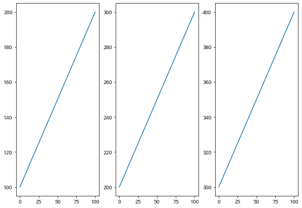
1-4. 여러개의 plot을 그리는 방법 (subplots) - s가 더 붙습니다.
plt.subplots(행의 갯수, 열의 갯수)
data = np.arange(1, 51)
# data 생성
# 밑 그림
fig, axes = plt.subplots(2, 3)
axes[0, 0].plot(data)
axes[0, 1].plot(data * data)
axes[0, 2].plot(data ** 3)
axes[1, 0].plot(data % 10)
axes[1, 1].plot(-data)
axes[1, 2].plot(data // 20)
plt.tight_layout()
plt.show()/home/ubuntu/anaconda3/envs/tensorflow2_p36/lib/python3.6/site-packages/matplotlib/backends/backend_agg.py:211: RuntimeWarning: Glyph 8722 missing from current font.
font.set_text(s, 0.0, flags=flags)
/home/ubuntu/anaconda3/envs/tensorflow2_p36/lib/python3.6/site-packages/matplotlib/backends/backend_agg.py:180: RuntimeWarning: Glyph 8722 missing from current font.
font.set_text(s, 0, flags=flags)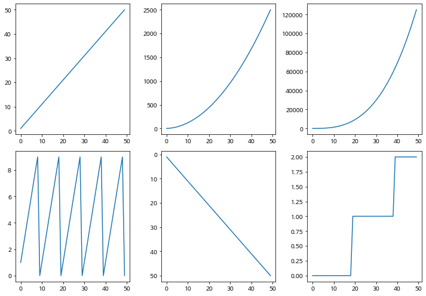
2. 주요 스타일 옵션
from IPython.display import Image
# 출처: matplotlib.org
Image('https://matplotlib.org/_images/anatomy.png')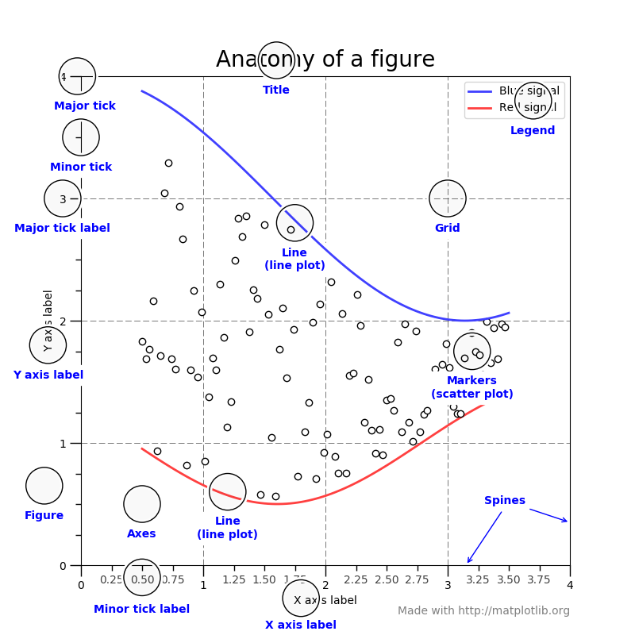
2-1. 타이틀
plt.plot([1, 2, 3], [3, 6, 9])
plt.plot([1, 2, 3], [2, 4, 9])
# 타이틀 & font 설정
plt.title('이것은 타이틀 입니다')
plt.show()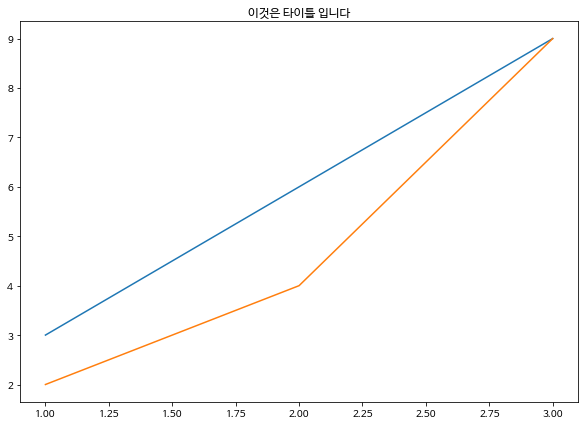
plt.plot([1, 2, 3], [3, 6, 9])
plt.plot([1, 2, 3], [2, 4, 9])
# 타이틀 & font 설정
plt.title('타이틀 fontsize를 키웁니다', fontsize=20)
plt.show()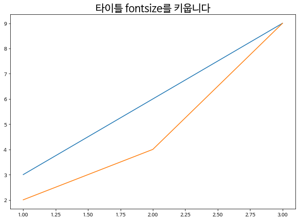
2-2. X, Y축 Label 설정
plt.plot([1, 2, 3], [3, 6, 9])
plt.plot([1, 2, 3], [2, 4, 9])
# 타이틀 & font 설정
plt.title('Label 설정 예제입니다', fontsize=20)
# X축 & Y축 Label 설정
plt.xlabel('X축', fontsize=20)
plt.ylabel('Y축', fontsize=20)
plt.show()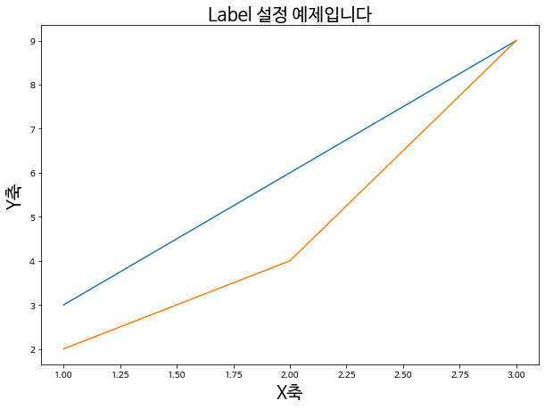
2-3. X, Y 축 Tick 설정 (rotation)
Tick은 X, Y축에 위치한 눈금을 말합니다.
plt.plot(np.arange(10), np.arange(10)*2)
plt.plot(np.arange(10), np.arange(10)**2)
plt.plot(np.arange(10), np.log(np.arange(10)))
# 타이틀 & font 설정
plt.title('X, Y 틱을 조정합니다', fontsize=20)
# X축 & Y축 Label 설정
plt.xlabel('X축', fontsize=20)
plt.ylabel('Y축', fontsize=20)
# X tick, Y tick 설정
plt.xticks(rotation=90)
plt.yticks(rotation=30)
plt.show()/home/ubuntu/anaconda3/envs/tensorflow2_p36/lib/python3.6/site-packages/ipykernel_launcher.py:3: RuntimeWarning: divide by zero encountered in log
This is separate from the ipykernel package so we can avoid doing imports until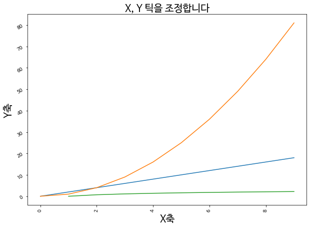
2-4. 범례(Legend) 설정
plt.plot(np.arange(10), np.arange(10)*2)
plt.plot(np.arange(10), np.arange(10)**2)
plt.plot(np.arange(10), np.log(np.arange(10)))
# 타이틀 & font 설정
plt.title('범례 설정 예제입니다', fontsize=20)
# X축 & Y축 Label 설정
plt.xlabel('X축', fontsize=20)
plt.ylabel('Y축', fontsize=20)
# X tick, Y tick 설정
plt.xticks(rotation=90)
plt.yticks(rotation=30)
# legend 설정
plt.legend(['10 * 2', '10 ** 2', 'log'], fontsize=15)
plt.show()/home/ubuntu/anaconda3/envs/tensorflow2_p36/lib/python3.6/site-packages/ipykernel_launcher.py:3: RuntimeWarning: divide by zero encountered in log
This is separate from the ipykernel package so we can avoid doing imports until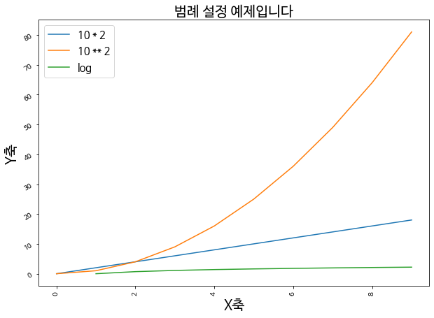
2-5. X와 Y의 한계점(Limit) 설정
xlim(), ylim()
plt.plot(np.arange(10), np.arange(10)*2)
plt.plot(np.arange(10), np.arange(10)**2)
plt.plot(np.arange(10), np.log(np.arange(10)))
# 타이틀 & font 설정
plt.title('이것은 타이틀 입니다', fontsize=20)
# X축 & Y축 Label 설정
plt.xlabel('X축', fontsize=20)
plt.ylabel('Y축', fontsize=20)
# X tick, Y tick 설정
plt.xticks(rotation=90)
plt.yticks(rotation=30)
# legend 설정
plt.legend(['10 * 2', '10 ** 2', 'log'], fontsize=15)
# x, y limit 설정
plt.xlim(0, 5)
plt.ylim(0.5, 10)
plt.show()/home/ubuntu/anaconda3/envs/tensorflow2_p36/lib/python3.6/site-packages/ipykernel_launcher.py:3: RuntimeWarning: divide by zero encountered in log
This is separate from the ipykernel package so we can avoid doing imports until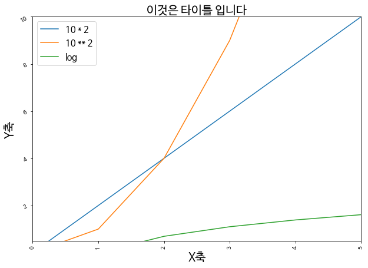
2-6. 스타일 세부 설정 - 마커, 라인, 컬러
스타일 세부 설정은 마커, 선의 종류 설정, 그리고 컬러가 있으며, 문자열로 세부설정을 하게 됩니다.
marker의 종류 * ‘.’ point marker * ‘,’ pixel marker * ‘o’ circle marker * ‘v’ triangle_down marker * ‘^’ triangle_up marker * ‘<’ triangle_left marker * ‘>’ triangle_right marker * ‘1’ tri_down marker * ‘2’ tri_up marker * ‘3’ tri_left marker * ‘4’ tri_right marker * ‘s’ square marker * ‘p’ pentagon marker * ‘’ star marker ’h’ hexagon1 marker * ‘H’ hexagon2 marker * ‘+’ plus marker * ‘x’ x marker * ‘D’ diamond marker * ‘d’ thin_diamond marker * ‘|’ vline marker * ’_’ hline marker
plt.plot(np.arange(10), np.arange(10)*2, marker='o', markersize=5)
plt.plot(np.arange(10), np.arange(10)*2 - 10, marker='v', markersize=10)
plt.plot(np.arange(10), np.arange(10)*2 - 20, marker='+', markersize=15)
plt.plot(np.arange(10), np.arange(10)*2 - 30, marker='*', markersize=20)
# 타이틀 & font 설정
plt.title('마커 설정 예제', fontsize=20)
# X축 & Y축 Label 설정
plt.xlabel('X축', fontsize=20)
plt.ylabel('Y축', fontsize=20)
# X tick, Y tick 설정
plt.xticks(rotation=90)
plt.yticks(rotation=30)
plt.show()/home/ubuntu/anaconda3/envs/tensorflow2_p36/lib/python3.6/site-packages/matplotlib/backends/backend_agg.py:211: RuntimeWarning: Glyph 8722 missing from current font.
font.set_text(s, 0.0, flags=flags)
/home/ubuntu/anaconda3/envs/tensorflow2_p36/lib/python3.6/site-packages/matplotlib/backends/backend_agg.py:180: RuntimeWarning: Glyph 8722 missing from current font.
font.set_text(s, 0, flags=flags)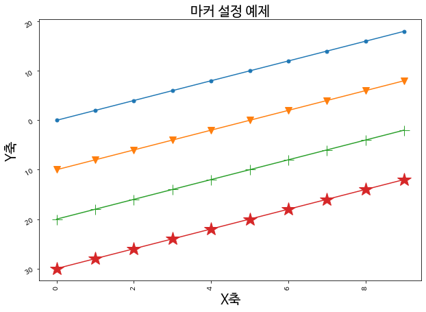
line의 종류 * ‘-’ solid line style * ‘–’ dashed line style * ‘-.’ dash-dot line style * ‘:’ dotted line style
plt.plot(np.arange(10), np.arange(10)*2, marker='o', linestyle='')
plt.plot(np.arange(10), np.arange(10)*2 - 10, marker='o', linestyle='-')
plt.plot(np.arange(10), np.arange(10)*2 - 20, marker='v', linestyle='--')
plt.plot(np.arange(10), np.arange(10)*2 - 30, marker='+', linestyle='-.')
plt.plot(np.arange(10), np.arange(10)*2 - 40, marker='*', linestyle=':')
# 타이틀 & font 설정
plt.title('다양한 선의 종류 예제', fontsize=20)
# X축 & Y축 Label 설정
plt.xlabel('X축', fontsize=20)
plt.ylabel('Y축', fontsize=20)
# X tick, Y tick 설정
plt.xticks(rotation=90)
plt.yticks(rotation=30)
plt.show()/home/ubuntu/anaconda3/envs/tensorflow2_p36/lib/python3.6/site-packages/matplotlib/backends/backend_agg.py:211: RuntimeWarning: Glyph 8722 missing from current font.
font.set_text(s, 0.0, flags=flags)
/home/ubuntu/anaconda3/envs/tensorflow2_p36/lib/python3.6/site-packages/matplotlib/backends/backend_agg.py:180: RuntimeWarning: Glyph 8722 missing from current font.
font.set_text(s, 0, flags=flags)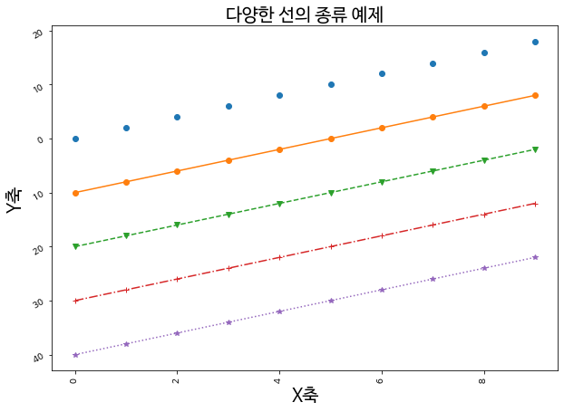
color의 종류 * ‘b’ blue * ‘g’ green * ‘r’ red * ‘c’ cyan * ‘m’ magenta * ‘y’ yellow * ‘k’ black * ‘w’ white
plt.plot(np.arange(10), np.arange(10)*2, marker='o', linestyle='-', color='b')
plt.plot(np.arange(10), np.arange(10)*2 - 10, marker='v', linestyle='--', color='c')
plt.plot(np.arange(10), np.arange(10)*2 - 20, marker='+', linestyle='-.', color='y')
plt.plot(np.arange(10), np.arange(10)*2 - 30, marker='*', linestyle=':', color='r')
# 타이틀 & font 설정
plt.title('색상 설정 예제', fontsize=20)
# X축 & Y축 Label 설정
plt.xlabel('X축', fontsize=20)
plt.ylabel('Y축', fontsize=20)
# X tick, Y tick 설정
plt.xticks(rotation=90)
plt.yticks(rotation=30)
plt.show()/home/ubuntu/anaconda3/envs/tensorflow2_p36/lib/python3.6/site-packages/matplotlib/backends/backend_agg.py:211: RuntimeWarning: Glyph 8722 missing from current font.
font.set_text(s, 0.0, flags=flags)
/home/ubuntu/anaconda3/envs/tensorflow2_p36/lib/python3.6/site-packages/matplotlib/backends/backend_agg.py:180: RuntimeWarning: Glyph 8722 missing from current font.
font.set_text(s, 0, flags=flags)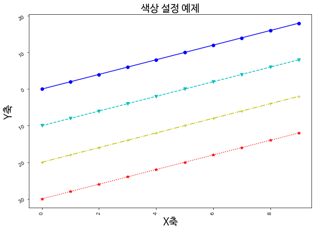
plt.plot(np.arange(10), np.arange(10)*2, color='b', alpha=0.1)
plt.plot(np.arange(10), np.arange(10)*2 - 10, color='b', alpha=0.3)
plt.plot(np.arange(10), np.arange(10)*2 - 20, color='b', alpha=0.6)
plt.plot(np.arange(10), np.arange(10)*2 - 30, color='b', alpha=1.0)
# 타이틀 & font 설정
plt.title('투명도 (alpha) 설정 예제', fontsize=20)
# X축 & Y축 Label 설정
plt.xlabel('X축', fontsize=20)
plt.ylabel('Y축', fontsize=20)
# X tick, Y tick 설정
plt.xticks(rotation=90)
plt.yticks(rotation=30)
plt.show()/home/ubuntu/anaconda3/envs/tensorflow2_p36/lib/python3.6/site-packages/matplotlib/backends/backend_agg.py:211: RuntimeWarning: Glyph 8722 missing from current font.
font.set_text(s, 0.0, flags=flags)
/home/ubuntu/anaconda3/envs/tensorflow2_p36/lib/python3.6/site-packages/matplotlib/backends/backend_agg.py:180: RuntimeWarning: Glyph 8722 missing from current font.
font.set_text(s, 0, flags=flags)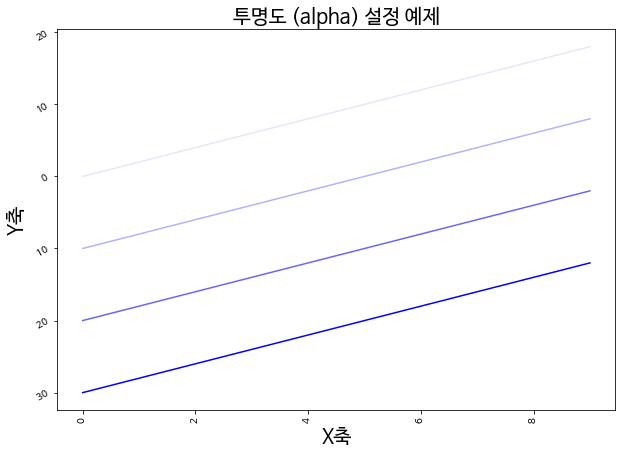
2-7. 그리드 설정
plt.plot(np.arange(10), np.arange(10)*2, marker='o', linestyle='-', color='b')
plt.plot(np.arange(10), np.arange(10)*2 - 10, marker='v', linestyle='--', color='c')
plt.plot(np.arange(10), np.arange(10)*2 - 20, marker='+', linestyle='-.', color='y')
plt.plot(np.arange(10), np.arange(10)*2 - 30, marker='*', linestyle=':', color='r')
# 타이틀 & font 설정
plt.title('그리드 설정 예제', fontsize=20)
# X축 & Y축 Label 설정
plt.xlabel('X축', fontsize=20)
plt.ylabel('Y축', fontsize=20)
# X tick, Y tick 설정
plt.xticks(rotation=90)
plt.yticks(rotation=30)
# grid 옵션 추가
plt.grid()
plt.show()/home/ubuntu/anaconda3/envs/tensorflow2_p36/lib/python3.6/site-packages/matplotlib/backends/backend_agg.py:211: RuntimeWarning: Glyph 8722 missing from current font.
font.set_text(s, 0.0, flags=flags)
/home/ubuntu/anaconda3/envs/tensorflow2_p36/lib/python3.6/site-packages/matplotlib/backends/backend_agg.py:180: RuntimeWarning: Glyph 8722 missing from current font.
font.set_text(s, 0, flags=flags)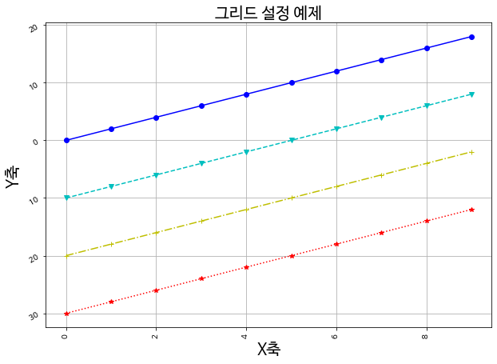
## 2-8 annotate 설정plt.plot(np.arange(10), np.arange(10)*2, marker='o', linestyle='-', color='b')
plt.plot(np.arange(10), np.arange(10)*2 - 10, marker='v', linestyle='--', color='c')
plt.plot(np.arange(10), np.arange(10)*2 - 20, marker='+', linestyle='-.', color='y')
plt.plot(np.arange(10), np.arange(10)*2 - 30, marker='*', linestyle=':', color='r')
# 타이틀 & font 설정
plt.title('그리드 설정 예제', fontsize=20)
# X축 & Y축 Label 설정
plt.xlabel('X축', fontsize=20)
plt.ylabel('Y축', fontsize=20)
# X tick, Y tick 설정
plt.xticks(rotation=90)
plt.yticks(rotation=30)
# annotate 설정
plt.annotate('코로나 사태 발생 지점', xy=(3, -20), xytext=(3, -25), arrowprops=dict(facecolor='black', shrink=0.05))
# grid 옵션 추가
plt.grid()
plt.show()/home/ubuntu/anaconda3/envs/tensorflow2_p36/lib/python3.6/site-packages/matplotlib/backends/backend_agg.py:211: RuntimeWarning: Glyph 8722 missing from current font.
font.set_text(s, 0.0, flags=flags)
/home/ubuntu/anaconda3/envs/tensorflow2_p36/lib/python3.6/site-packages/matplotlib/backends/backend_agg.py:180: RuntimeWarning: Glyph 8722 missing from current font.
font.set_text(s, 0, flags=flags)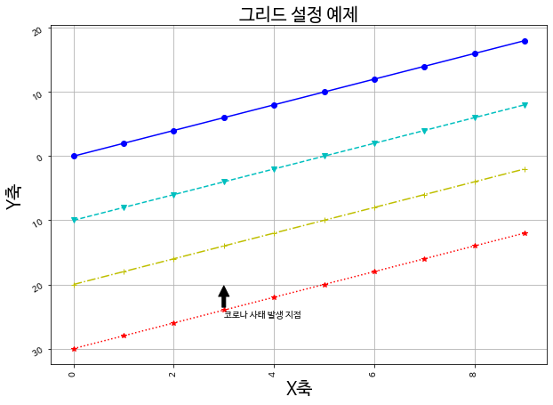
matplotlib 을 활용한 다양한 그래프 그리기
1. Scatterplot
0 ~ 1 사이의 임의의 랜덤한 값을 생성합니다.
np.random.rand(50)array([0.29626504, 0.78371348, 0.11357925, 0.21256524, 0.8109623 ,
0.33517112, 0.68046713, 0.28353737, 0.12155099, 0.94619289,
0.69900728, 0.55185715, 0.82033173, 0.11200389, 0.91439391,
0.11403073, 0.60428939, 0.52969614, 0.09555855, 0.35015891,
0.25106891, 0.43855905, 0.91421888, 0.99440876, 0.63035013,
0.04861833, 0.94204009, 0.03636596, 0.33057959, 0.90177104,
0.48091921, 0.00494735, 0.54410306, 0.27708987, 0.26808791,
0.49820038, 0.3969647 , 0.72744635, 0.70675491, 0.18997341,
0.84598122, 0.91546396, 0.99657786, 0.29806435, 0.82270311,
0.36317454, 0.30802989, 0.44184502, 0.4875401 , 0.37602673])0 부터 50개의 값을 순차적으로 생성합니다.
np.arange(50)array([ 0, 1, 2, 3, 4, 5, 6, 7, 8, 9, 10, 11, 12, 13, 14, 15, 16,
17, 18, 19, 20, 21, 22, 23, 24, 25, 26, 27, 28, 29, 30, 31, 32, 33,
34, 35, 36, 37, 38, 39, 40, 41, 42, 43, 44, 45, 46, 47, 48, 49])1-1. x, y, colors, area 설정하기
- colors 는 임의 값을 color 값으로 변환합니다.
- area는 점의 넓이를 나타냅니다. 값이 커지면 당연히 넓이도 커집니다.
x = np.random.rand(50)
y = np.random.rand(50)
colors = np.arange(50)
area = x * y * 1000plt.scatter(x, y, s=area, c=colors)
plt.show()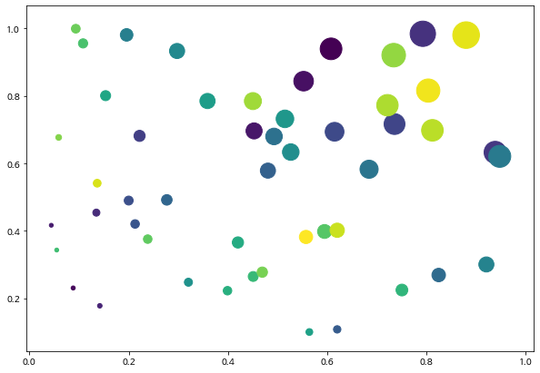
1-2. cmap과 alpha
- cmap에 컬러를 지정하면, 컬러 값을 모두 같게 가져갈 수도 있습니다.
- alpha값은 투명도를 나타내며 0 ~ 1 사이의 값을 지정해 줄 수 있으며, 0에 가까울 수록 투명한 값을 가집니다.
np.random.rand(50)array([0.78516521, 0.54489727, 0.83812005, 0.16160557, 0.19091308,
0.22809742, 0.97868944, 0.36879998, 0.03570702, 0.41551716,
0.70459881, 0.6113276 , 0.19187684, 0.22188036, 0.41030993,
0.52020618, 0.3816434 , 0.57140818, 0.63444532, 0.80470719,
0.04899969, 0.62245326, 0.31310982, 0.38447058, 0.8117971 ,
0.65465056, 0.56533836, 0.73710174, 0.21237264, 0.48956598,
0.17043096, 0.07870155, 0.63045311, 0.45282431, 0.09999136,
0.85872203, 0.97021617, 0.49723785, 0.98449735, 0.14325659,
0.69517703, 0.85776342, 0.26192053, 0.08704771, 0.97536983,
0.47573521, 0.9043739 , 0.12915836, 0.51061284, 0.62506511])plt.figure(figsize=(12, 6))
plt.subplot(131)
plt.scatter(x, y, s=area, cmap='blue', alpha=0.1)
plt.title('alpha=0.1')
plt.subplot(132)
plt.title('alpha=0.5')
plt.scatter(x, y, s=area, cmap='blue', alpha=0.5)
plt.subplot(133)
plt.title('alpha=1.0')
plt.scatter(x, y, s=area, cmap='blue', alpha=1.0)
plt.show()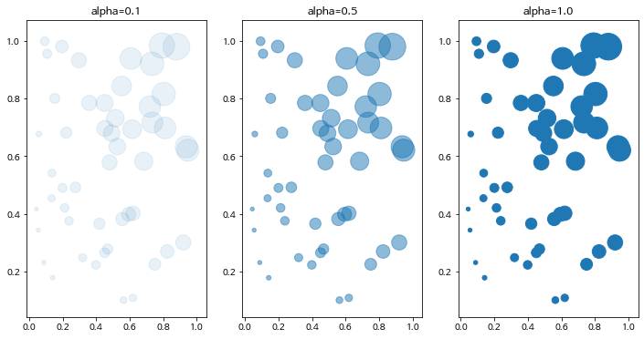
2. Barplot, Barhplot
1개의 canvas 안에 다중 그래프 그리기
2-1. 기본 Barplot 그리기
x = ['Math', 'Programming', 'Data Science', 'Art', 'English', 'Physics']
y = [66, 80, 60, 50, 80, 10]
plt.figure(figsize=(6, 3))
# plt.bar(x, y)
plt.bar(x, y, align='center', alpha=0.7, color='red')
plt.xticks(x)
plt.ylabel('Number of Students')
plt.title('Subjects')
plt.show()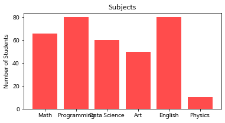
2-2. 기본 Barhplot 그리기
barh 함수에서는 xticks로 설정했던 부분을 yticks로 변경합니다.
x = ['Math', 'Programming', 'Data Science', 'Art', 'English', 'Physics']
y = [66, 80, 60, 50, 80, 10]
plt.barh(x, y, align='center', alpha=0.7, color='green')
plt.yticks(x)
plt.xlabel('Number of Students')
plt.title('Subjects')
plt.show()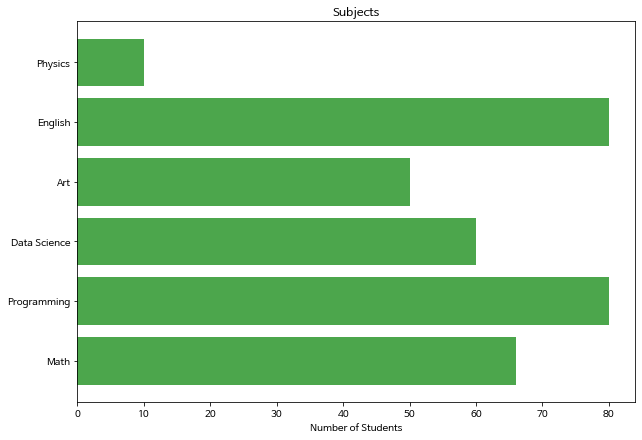
Batplot에서 비교 그래프 그리기
x_label = ['Math', 'Programming', 'Data Science', 'Art', 'English', 'Physics']
x = np.arange(len(x_label))
y_1 = [66, 80, 60, 50, 80, 10]
y_2 = [55, 90, 40, 60, 70, 20]
# 넓이 지정
width = 0.35
# subplots 생성
fig, axes = plt.subplots()
# 넓이 설정
axes.bar(x - width/2, y_1, width, align='center', alpha=0.5)
axes.bar(x + width/2, y_2, width, align='center', alpha=0.8)
# xtick 설정
plt.xticks(x)
axes.set_xticklabels(x_label)
plt.ylabel('Number of Students')
plt.title('Subjects')
plt.legend(['john', 'peter'])
plt.show()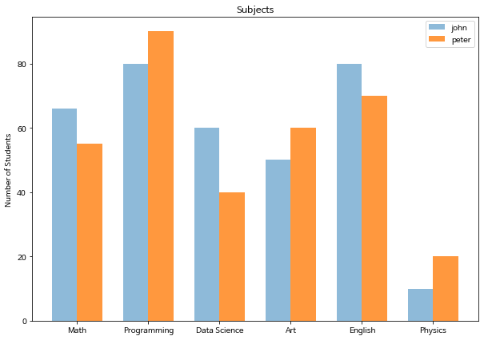
x_label = ['Math', 'Programming', 'Data Science', 'Art', 'English', 'Physics']
x = np.arange(len(x_label))
y_1 = [66, 80, 60, 50, 80, 10]
y_2 = [55, 90, 40, 60, 70, 20]
# 넓이 지정
width = 0.35
# subplots 생성
fig, axes = plt.subplots()
# 넓이 설정
axes.barh(x - width/2, y_1, width, align='center', alpha=0.5, color='green')
axes.barh(x + width/2, y_2, width, align='center', alpha=0.8, color='red')
# xtick 설정
plt.yticks(x)
axes.set_yticklabels(x_label)
plt.xlabel('Number of Students')
plt.title('Subjects')
plt.legend(['john', 'peter'])
plt.show()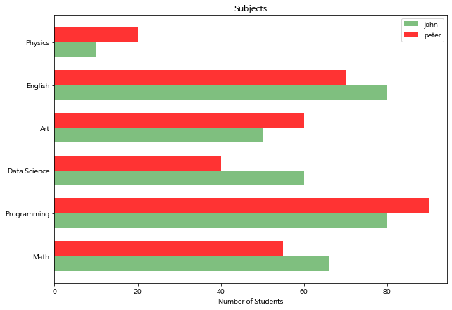
3. Line Plot
3-1. 기본 lineplot 그리기
x = np.arange(0, 10, 0.1)
y = 1 + np.sin(x)
plt.plot(x, y)
plt.xlabel('x value', fontsize=15)
plt.ylabel('y value', fontsize=15)
plt.title('sin graph', fontsize=18)
plt.grid()
plt.show()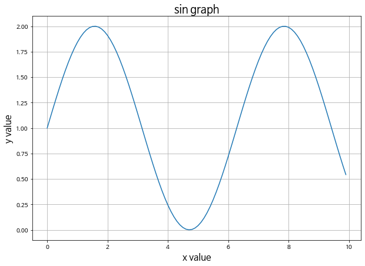
3-2. 2개 이상의 그래프 그리기
- color: 컬러 옵션
- alpha: 투명도 옵션
x = np.arange(0, 10, 0.1)
y_1 = 1 + np.sin(x)
y_2 = 1 + np.cos(x)
plt.plot(x, y_1, label='1+sin', color='blue', alpha=0.3)
plt.plot(x, y_2, label='1+cos', color='red', alpha=0.7)
plt.xlabel('x value', fontsize=15)
plt.ylabel('y value', fontsize=15)
plt.title('sin and cos graph', fontsize=18)
plt.grid()
plt.legend()
plt.show()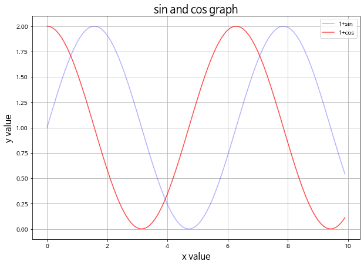
3-3. 마커 스타일링
- marker: 마커 옵션
x = np.arange(0, 10, 0.1)
y_1 = 1 + np.sin(x)
y_2 = 1 + np.cos(x)
plt.plot(x, y_1, label='1+sin', color='blue', alpha=0.3, marker='o')
plt.plot(x, y_2, label='1+cos', color='red', alpha=0.7, marker='+')
plt.xlabel('x value', fontsize=15)
plt.ylabel('y value', fontsize=15)
plt.title('sin and cos graph', fontsize=18)
plt.grid()
plt.legend()
plt.show()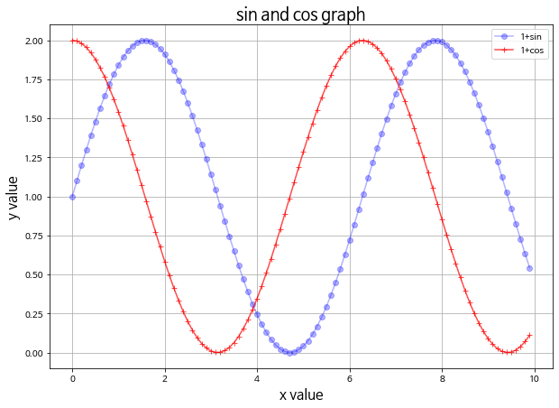
3-4 라인 스타일 변경하기
- linestyle: 라인 스타일 변경 옵션
x = np.arange(0, 10, 0.1)
y_1 = 1 + np.sin(x)
y_2 = 1 + np.cos(x)
plt.plot(x, y_1, label='1+sin', color='blue', linestyle=':')
plt.plot(x, y_2, label='1+cos', color='red', linestyle='-.')
plt.xlabel('x value', fontsize=15)
plt.ylabel('y value', fontsize=15)
plt.title('sin and cos graph', fontsize=18)
plt.grid()
plt.legend()
plt.show()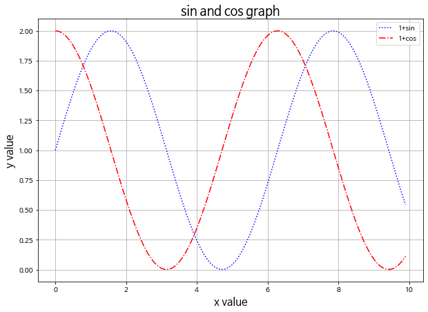
4. Areaplot (Filled Area)
matplotlib에서 area plot을 그리고자 할 때는 fill_between 함수를 사용합니다.
y = np.random.randint(low=5, high=10, size=20)
yarray([5, 6, 9, 9, 5, 8, 7, 8, 5, 7, 7, 8, 9, 5, 5, 9, 8, 8, 7, 5])4-1. 기본 areaplot 그리기
x = np.arange(1,21)
y = np.random.randint(low=5, high=10, size=20)
# fill_between으로 색칠하기
plt.fill_between(x, y, color="green", alpha=0.6)
plt.show()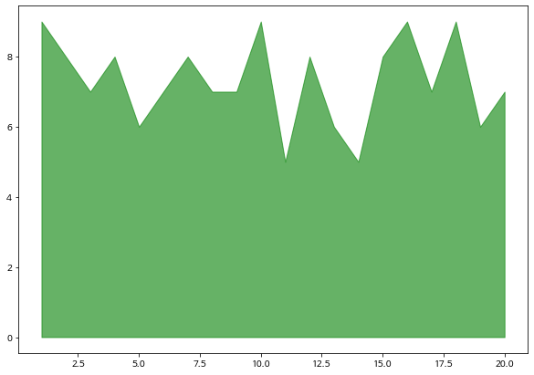
4-2. 경계선을 굵게 그리고 area는 옅게 그리는 효과 적용
plt.fill_between(x, y, color="green", alpha=0.3)
plt.plot(x, y, color="green", alpha=0.8)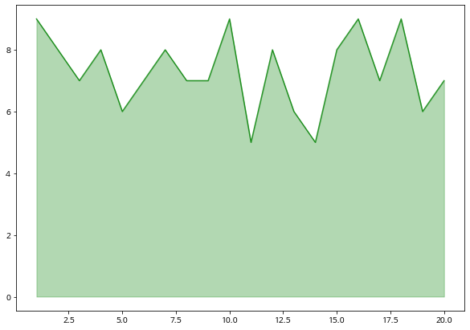
4-3. 여러 그래프를 겹쳐서 표현
x = np.arange(1, 10, 0.05)
y_1 = np.cos(x)+1
y_2 = np.sin(x)+1
y_3 = y_1 * y_2 / np.pi
plt.fill_between(x, y_1, color="green", alpha=0.1)
plt.fill_between(x, y_2, color="blue", alpha=0.2)
plt.fill_between(x, y_3, color="red", alpha=0.3)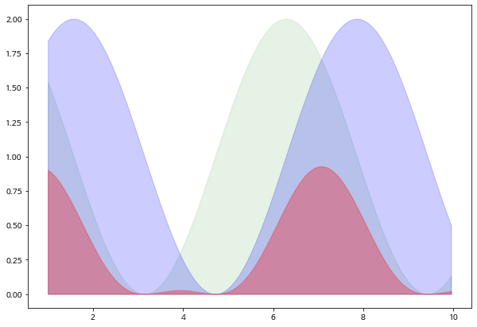
5. Histogram
5-1. 기본 Histogram 그리기
N = 100000
bins = 30
x = np.random.randn(N)
plt.hist(x, bins=bins)
plt.show()/home/ubuntu/anaconda3/envs/tensorflow2_p36/lib/python3.6/site-packages/matplotlib/backends/backend_agg.py:211: RuntimeWarning: Glyph 8722 missing from current font.
font.set_text(s, 0.0, flags=flags)
/home/ubuntu/anaconda3/envs/tensorflow2_p36/lib/python3.6/site-packages/matplotlib/backends/backend_agg.py:180: RuntimeWarning: Glyph 8722 missing from current font.
font.set_text(s, 0, flags=flags)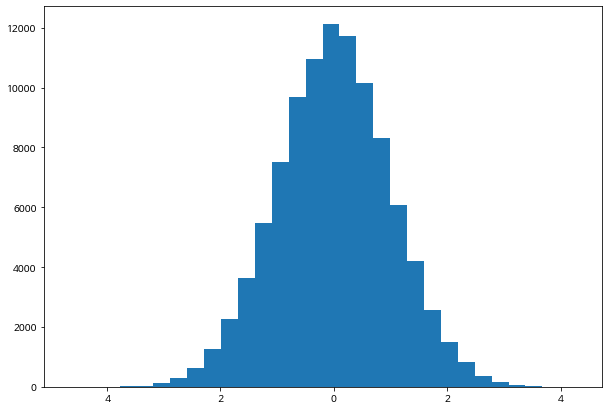
- sharey: y축을 다중 그래프가 share
- tight_layout: graph의 패딩을 자동으로 조절해주어 fit한 graph를 생성
5-2. 다중 Histogram 그리기
N = 100000
bins = 30
x = np.random.randn(N)
fig, axs = plt.subplots(1, 3,
sharey=True,
tight_layout=True
)
fig.set_size_inches(12, 5)
axs[0].hist(x, bins=bins)
axs[1].hist(x, bins=bins*2)
axs[2].hist(x, bins=bins*4)
plt.show()/home/ubuntu/anaconda3/envs/tensorflow2_p36/lib/python3.6/site-packages/matplotlib/backends/backend_agg.py:211: RuntimeWarning: Glyph 8722 missing from current font.
font.set_text(s, 0.0, flags=flags)
/home/ubuntu/anaconda3/envs/tensorflow2_p36/lib/python3.6/site-packages/matplotlib/backends/backend_agg.py:180: RuntimeWarning: Glyph 8722 missing from current font.
font.set_text(s, 0, flags=flags)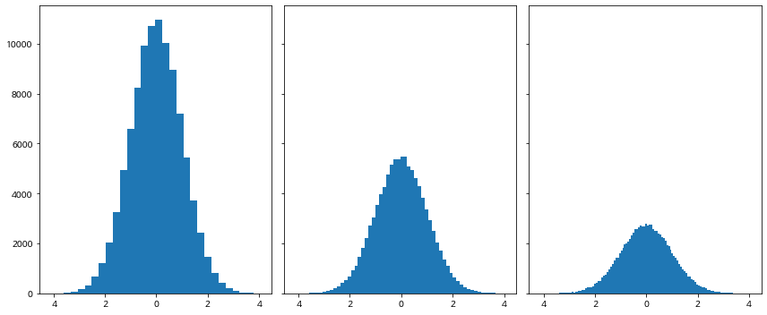
5-3. Y축에 Density 표기
N = 100000
bins = 30
x = np.random.randn(N)
fig, axs = plt.subplots(1, 2,
tight_layout=True
)
fig.set_size_inches(9, 3)
# density=True 값을 통하여 Y축에 density를 표기할 수 있습니다.
axs[0].hist(x, bins=bins, density=True, cumulative=True)
axs[1].hist(x, bins=bins, density=True)
plt.show()/home/ubuntu/anaconda3/envs/tensorflow2_p36/lib/python3.6/site-packages/matplotlib/backends/backend_agg.py:211: RuntimeWarning: Glyph 8722 missing from current font.
font.set_text(s, 0.0, flags=flags)
/home/ubuntu/anaconda3/envs/tensorflow2_p36/lib/python3.6/site-packages/matplotlib/backends/backend_agg.py:180: RuntimeWarning: Glyph 8722 missing from current font.
font.set_text(s, 0, flags=flags)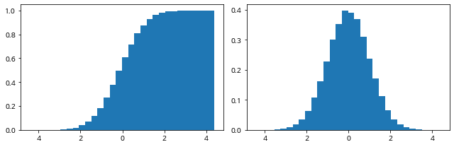
6. Pie Chart
pie chart 옵션
- explode: 파이에서 툭 튀어져 나온 비율
- autopct: 퍼센트 자동으로 표기
- shadow: 그림자 표시
- startangle: 파이를 그리기 시작할 각도
texts, autotexts 인자를 리턴 받습니다.
texts는 label에 대한 텍스트 효과를
autotexts는 파이 위에 그려지는 텍스트 효과를 다룰 때 활용합니다.
labels = ['Samsung', 'Huawei', 'Apple', 'Xiaomi', 'Oppo', 'Etc']
sizes = [20.4, 15.8, 10.5, 9, 7.6, 36.7]
explode = (0.3, 0, 0, 0, 0, 0)
# texts, autotexts 인자를 활용하여 텍스트 스타일링을 적용합니다
patches, texts, autotexts = plt.pie(sizes,
explode=explode,
labels=labels,
autopct='%1.1f%%',
shadow=True,
startangle=90)
plt.title('Smartphone pie', fontsize=15)
# label 텍스트에 대한 스타일 적용
for t in texts:
t.set_fontsize(12)
t.set_color('gray')
# pie 위의 텍스트에 대한 스타일 적용
for t in autotexts:
t.set_color("white")
t.set_fontsize(18)
plt.show()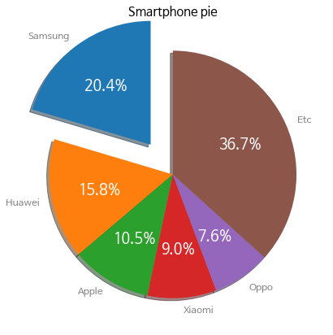
7. Box Plot
샘플 데이터를 생성합니다.
# 샘플 데이터 생성
spread = np.random.rand(50) * 100
center = np.ones(25) * 50
flier_high = np.random.rand(10) * 100 + 100
flier_low = np.random.rand(10) * -100
data = np.concatenate((spread, center, flier_high, flier_low))7-1 기본 박스플롯 생성
plt.boxplot(data)
plt.tight_layout()
plt.show()/home/ubuntu/anaconda3/envs/tensorflow2_p36/lib/python3.6/site-packages/matplotlib/backends/backend_agg.py:211: RuntimeWarning: Glyph 8722 missing from current font.
font.set_text(s, 0.0, flags=flags)
/home/ubuntu/anaconda3/envs/tensorflow2_p36/lib/python3.6/site-packages/matplotlib/backends/backend_agg.py:180: RuntimeWarning: Glyph 8722 missing from current font.
font.set_text(s, 0, flags=flags)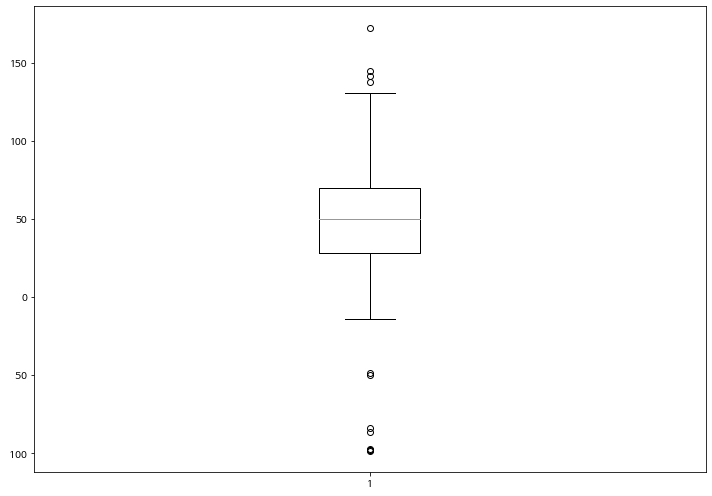
7-2. 다중 박스플롯 생성
# 샘플 데이터 생성
spread = np.random.rand(50) * 100
center = np.ones(25) * 50
flier_high = np.random.rand(10) * 100 + 100
flier_low = np.random.rand(10) * -100
data = np.concatenate((spread, center, flier_high, flier_low))
spread = np.random.rand(50) * 100
center = np.ones(25) * 40
flier_high = np.random.rand(10) * 100 + 100
flier_low = np.random.rand(10) * -100
d2 = np.concatenate((spread, center, flier_high, flier_low))
data.shape = (-1, 1)
d2.shape = (-1, 1)
data = [data, d2, d2[::2,0]]boxplot()으로 매우 쉽게 생성할 수 있습니다.
다중 그래프 생성을 위해서는 data 자체가 2차원으로 구성되어 있어야 합니다.
row와 column으로 구성된 DataFrame에서 Column은 X축에 Row는 Y축에 구성된다고 이해하시면 됩니다.
plt.boxplot(data)
plt.show()/home/ubuntu/anaconda3/envs/tensorflow2_p36/lib/python3.6/site-packages/matplotlib/backends/backend_agg.py:211: RuntimeWarning: Glyph 8722 missing from current font.
font.set_text(s, 0.0, flags=flags)
/home/ubuntu/anaconda3/envs/tensorflow2_p36/lib/python3.6/site-packages/matplotlib/backends/backend_agg.py:180: RuntimeWarning: Glyph 8722 missing from current font.
font.set_text(s, 0, flags=flags)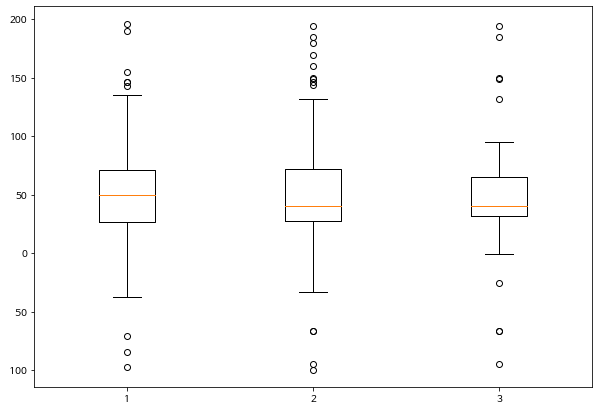
7-3. Box Plot 축 바꾸기
vert=False 옵션을 통해 표시하고자 하는 축을 바꿀 수 있습니다.
plt.title('Horizontal Box Plot', fontsize=15)
plt.boxplot(data, vert=False)
plt.show()/home/ubuntu/anaconda3/envs/tensorflow2_p36/lib/python3.6/site-packages/matplotlib/backends/backend_agg.py:211: RuntimeWarning: Glyph 8722 missing from current font.
font.set_text(s, 0.0, flags=flags)
/home/ubuntu/anaconda3/envs/tensorflow2_p36/lib/python3.6/site-packages/matplotlib/backends/backend_agg.py:180: RuntimeWarning: Glyph 8722 missing from current font.
font.set_text(s, 0, flags=flags)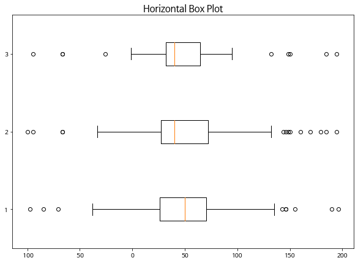
7-4. Outlier 마커 심볼과 컬러 변경
outlier_marker = dict(markerfacecolor='r', marker='D')plt.title('Changed Outlier Symbols', fontsize=15)
plt.boxplot(data, flierprops=outlier_marker)
plt.show()/home/ubuntu/anaconda3/envs/tensorflow2_p36/lib/python3.6/site-packages/matplotlib/backends/backend_agg.py:211: RuntimeWarning: Glyph 8722 missing from current font.
font.set_text(s, 0.0, flags=flags)
/home/ubuntu/anaconda3/envs/tensorflow2_p36/lib/python3.6/site-packages/matplotlib/backends/backend_agg.py:180: RuntimeWarning: Glyph 8722 missing from current font.
font.set_text(s, 0, flags=flags)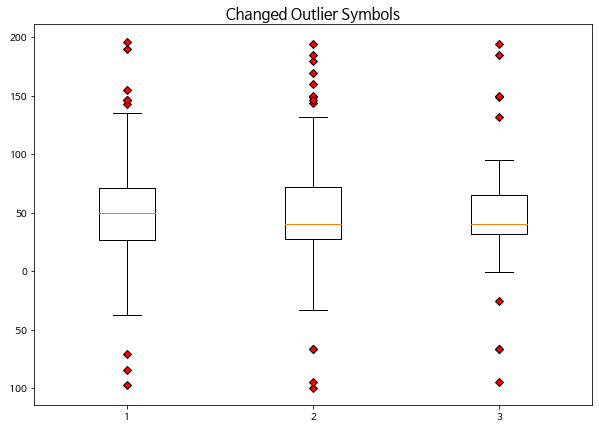
8. 3D 그래프 그리기
3d 로 그래프를 그리기 위해서는 mplot3d를 추가로 import 합니다
from mpl_toolkits import mplot3d8-1. 밑그림 그리기 (캔버스)
fig = plt.figure()
ax = plt.axes(projection='3d')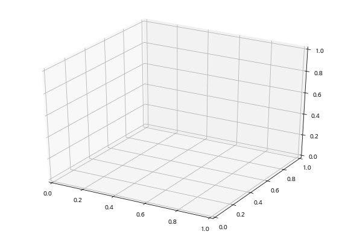
8-2. 3d plot 그리기
# project=3d로 설정합니다
ax = plt.axes(projection='3d')
# x, y, z 데이터를 생성합니다
z = np.linspace(0, 15, 1000)
x = np.sin(z)
y = np.cos(z)
ax.plot(x, y, z, 'gray')
plt.show()/home/ubuntu/anaconda3/envs/tensorflow2_p36/lib/python3.6/site-packages/matplotlib/backends/backend_agg.py:211: RuntimeWarning: Glyph 8722 missing from current font.
font.set_text(s, 0.0, flags=flags)
/home/ubuntu/anaconda3/envs/tensorflow2_p36/lib/python3.6/site-packages/matplotlib/backends/backend_agg.py:180: RuntimeWarning: Glyph 8722 missing from current font.
font.set_text(s, 0, flags=flags)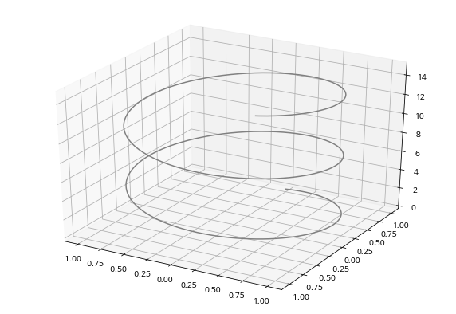
# project=3d로 설정합니다
ax = plt.axes(projection='3d')
sample_size = 100
x = np.cumsum(np.random.normal(0, 1, sample_size))
y = np.cumsum(np.random.normal(0, 1, sample_size))
z = np.cumsum(np.random.normal(0, 1, sample_size))
ax.plot3D(x, y, z, alpha=0.6, marker='o')
plt.title("ax.plot")
plt.show()/home/ubuntu/anaconda3/envs/tensorflow2_p36/lib/python3.6/site-packages/matplotlib/backends/backend_agg.py:211: RuntimeWarning: Glyph 8722 missing from current font.
font.set_text(s, 0.0, flags=flags)
/home/ubuntu/anaconda3/envs/tensorflow2_p36/lib/python3.6/site-packages/matplotlib/backends/backend_agg.py:180: RuntimeWarning: Glyph 8722 missing from current font.
font.set_text(s, 0, flags=flags)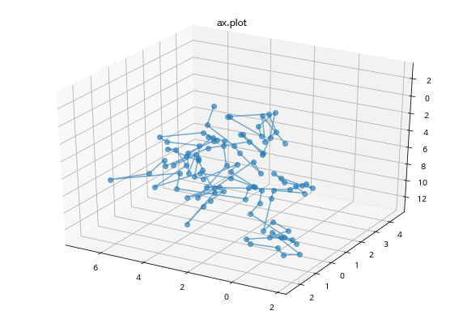
8-3. 3d-scatter 그리기
fig = plt.figure(figsize=(10, 5))
ax = fig.add_subplot(111, projection='3d') # Axe3D object
sample_size = 500
x = np.cumsum(np.random.normal(0, 5, sample_size))
y = np.cumsum(np.random.normal(0, 5, sample_size))
z = np.cumsum(np.random.normal(0, 5, sample_size))
ax.scatter(x, y, z, c = z, s=20, alpha=0.5, cmap='Greens')
plt.title("ax.scatter")
plt.show()/home/ubuntu/anaconda3/envs/tensorflow2_p36/lib/python3.6/site-packages/matplotlib/backends/backend_agg.py:211: RuntimeWarning: Glyph 8722 missing from current font.
font.set_text(s, 0.0, flags=flags)
/home/ubuntu/anaconda3/envs/tensorflow2_p36/lib/python3.6/site-packages/matplotlib/backends/backend_agg.py:180: RuntimeWarning: Glyph 8722 missing from current font.
font.set_text(s, 0, flags=flags)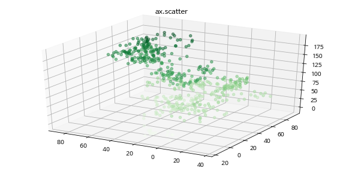
8-4. contour3D 그리기 (등고선)
x = np.linspace(-6, 6, 30)
y = np.linspace(-6, 6, 30)
x, y = np.meshgrid(x, y)
z = np.sin(np.sqrt(x**2 + y**2))
fig = plt.figure(figsize=(12, 6))
ax = plt.axes(projection='3d')
ax.contour3D(x, y, z, 20, cmap='Reds')
plt.title("ax.contour3D")
plt.show()/home/ubuntu/anaconda3/envs/tensorflow2_p36/lib/python3.6/site-packages/matplotlib/backends/backend_agg.py:211: RuntimeWarning: Glyph 8722 missing from current font.
font.set_text(s, 0.0, flags=flags)
/home/ubuntu/anaconda3/envs/tensorflow2_p36/lib/python3.6/site-packages/matplotlib/backends/backend_agg.py:180: RuntimeWarning: Glyph 8722 missing from current font.
font.set_text(s, 0, flags=flags)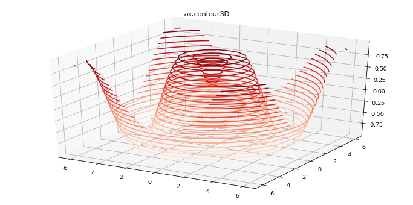
9. imshow
이미지(image) 데이터와 유사하게 행과 열을 가진 2차원의 데이터를 시각화 할 때는 imshow를 활용합니다.
from sklearn.datasets import load_digits
digits = load_digits()
X = digits.images[:10]
X[0]array([[ 0., 0., 5., 13., 9., 1., 0., 0.],
[ 0., 0., 13., 15., 10., 15., 5., 0.],
[ 0., 3., 15., 2., 0., 11., 8., 0.],
[ 0., 4., 12., 0., 0., 8., 8., 0.],
[ 0., 5., 8., 0., 0., 9., 8., 0.],
[ 0., 4., 11., 0., 1., 12., 7., 0.],
[ 0., 2., 14., 5., 10., 12., 0., 0.],
[ 0., 0., 6., 13., 10., 0., 0., 0.]])load_digits는 0~16 값을 가지는 array로 이루어져 있습니다.1개의 array는 8 X 8 배열 안에 표현되어 있습니다.
숫자는 0~9까지 이루어져있습니다.
fig, axes = plt.subplots(nrows=2, ncols=5, sharex=True, figsize=(12, 6), sharey=True)
for i in range(10):
axes[i//5][i%5].imshow(X[i], cmap='Blues')
axes[i//5][i%5].set_title(str(i), fontsize=20)
plt.tight_layout()
plt.show()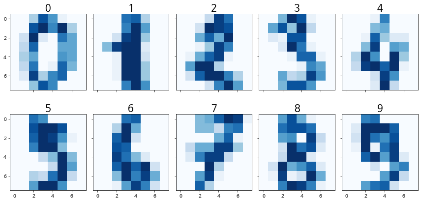